Практика 7. Непрерывные СВ и преобразования¶
Цель. Функция распределения и плотность; преобразования непрерывных СВ — монотонные, немонотонные и многомерные.
Ход пары
- Функции распределения и плотности
- Преобразование одномерной СВ
- Строго монотонные преобразования
- Немонотонные преобразования
- Многомерные преобразования
- Дискретные распределения
Из двух пар (7 и 8) 7 — почти полностью теория, 8 — закрепление и нарешивание.
Функции распределения и плотности¶
Теория¶
На доску
Функцией распределения называют функцию \(F(x)\), определяющую для каждого значения \(x\) вероятность того, что случайная величина \(X\) примет значение, меньшее \(x\),
На доску
Свойство 1. Значения функции распределения принадлежат отрезку \([0; 1]\):
На доску
Свойство 2. Функция распределения есть неубывающая функция:
На доску
Следствие 1. Вероятность того, что случайная величина \(X\) примет значение, заключенное в интервале \((a, b)\), равна приращению функции распределения на этом интервале:
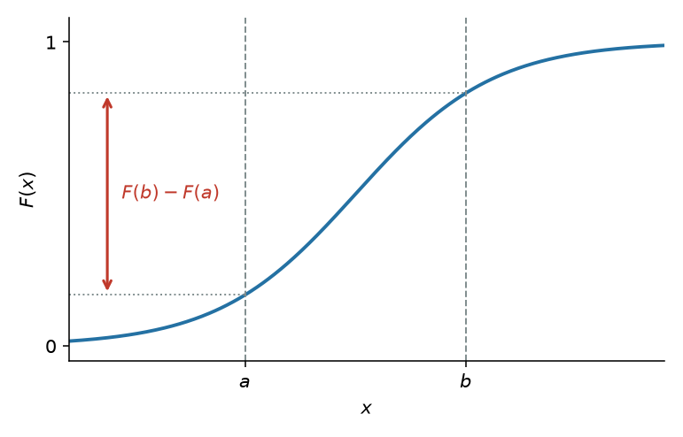
На доску
Следствие 2. Вероятность того, что непрерывная случайная величина \(X\) примет одно определенное значение, например \(x_1\), равна нулю:
На доску
Свойство 3. Если все возможные значения случайной величины \(X\) принадлежат интервалу \((a, b)\), то
На доску
Следствие. Справедливы следующие предельные соотношения:
На доску
Свойство 4. Функция распределения непрерывна слева:
В современных курсах чаще пишут \(F(x)=P(X\leqslant x)\) и непрерывность справа. Здесь — формулировка с \(P(X<x)\), как в задачниках.
Плотность¶
На доску
Плотностью распределения вероятностей непрерывной случайной величины называют первую производную от функции распределения: \(f(x) = F'(x)\).
На доску
Вероятность того, что непрерывная случайная величина \(X\) примет значение, принадлежащее интервалу \((a, b)\), определяется равенством
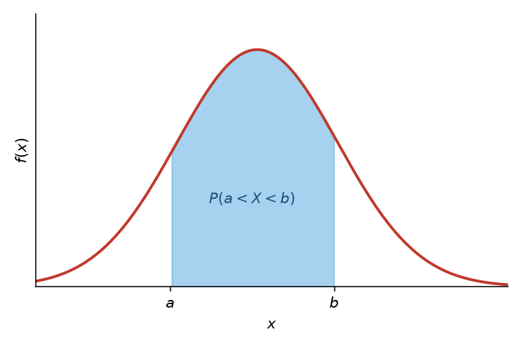
На доску
Зная плотность распределения, можно найти функцию распределения
На доску
Свойство 1. Плотность распределения неотрицательна, т. е. \(f(x) \geqslant 0\).
На доску
Свойство 2. Несобственный интеграл от плотности распределения в пределах от \(-\infty\) до \(\infty\) равен единице: \(\int_{-\infty}^{\infty} f(x)\, dx = 1\).
В частности, если все возможные значения случайной величины принадлежат интервалу \((a, b)\), то \(\int_a^b f(x)\, dx = 1\).
Задача 7.1. Кусочная \(F\)¶
Случайная величина \(X\) задана функцией распределения
Найти вероятность того, что в результате испытания величина \(X\) примет значение, заключенное в интервале \((0, 1/3)\) и найти плотность.
Решение¶
Открыть
\(P(a < X < b) = F(b) - F(a)\). Положив \(a = 0\), \(b = 1/3\),
Плотность — производная там, где \(F\) гладкая: \(f(x) = 3/4\) при \(-1 < x < 1/3\), и \(f(x)=0\) вне этого интервала. Скачки \(F\) нет, в \(\pm\) концах носителя плотность не обязана быть определена.
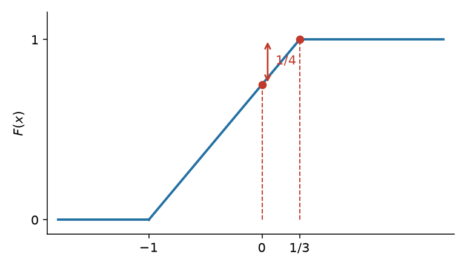
Задача 7.2. Арктангенс¶
Случайная величина \(X\) задана на всей оси \(Ox\) функцией распределения \(F(x) = 1/2 + (\operatorname{arctg} x)/\pi\). Найти вероятность того, что в результате испытания величина \(X\) примет значение, заключенное в интервале \((0, 1)\) и найти плотность.
Решение¶
Открыть
Это плотность Коши (с точностью до сдвига/масштаба — стандартная).
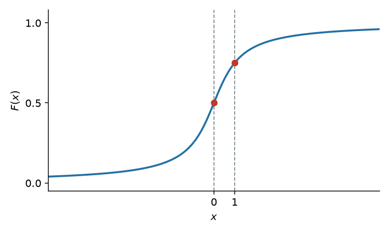
Преобразование одномерной СВ¶
Теория¶
На доску
Пусть \(X \sim f_X(x)\) — непрерывная случайная величина с носителем \(\mathcal{X}\). Пусть случайная величина \(Y\) задана через преобразование \(Y = g(X)\). Тогда \(Y\) имеет функцию распределения
Дальше есть два пути: посчитать напрямую по этой формуле или разбить на монотонно возрастающие/убывающие интервалы, чтобы взять обратную функцию.
Давайте один раз попробуем первый вариант — чтобы больше к нему не возвращаться.
Задача 7.3. \(\sin^2\) напрямую¶
Рассмотрим случайную величину \(X \sim \mathrm{uniform}(0, 2\pi)\) и преобразование \(Y = g(X) = \sin^2 X\).
График \(\sin^2\) на \([0, 2\pi]\): два горба, горизонталь \(y\) пересекает кривую в четырёх точках \(x_1 < x_2 < \pi < x_3 < x_4\).
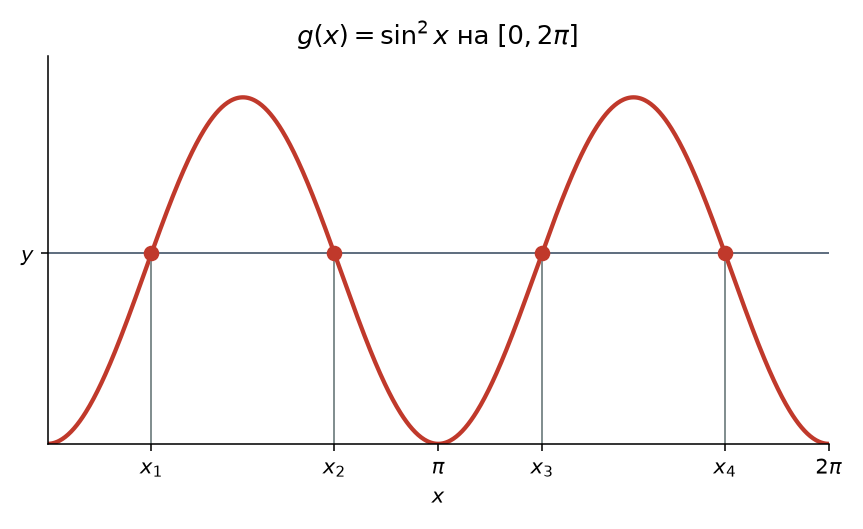
Решение¶
Открыть
Носитель \(Y\) — \([0, 1]\). Для \(y\in(0,1)\) положим \(\alpha=\arcsin\sqrt{y}\in(0,\pi/2)\). Тогда
Подставить в уже полученное:
На краях \(F_Y(y)=0\) при \(y\leqslant 0\) и \(F_Y(y)=1\) при \(y\geqslant 1\). Плотность:
Это арксинусное распределение (бета \(1/2\), \(1/2\)). Дальше к общему интегралу по \(\{g\leqslant y\}\) не возвращаемся: режем на монотонные куски.
Строго монотонные преобразования¶
Теория¶
На доску
Пусть \(X \sim F_X(x)\) и \(Y = g(X)\), где \(g(x)\) является строго монотонным преобразованием. Тогда
- \(g\) возрастает на \(\mathcal{X}\) \(\implies\) \(F_Y(y) = F_X\bigl(g^{-1}(y)\bigr)\), \(y \in \mathcal{Y}\);
- \(g\) убывает на \(\mathcal{X}\) и \(X\) является непрерывной \(\implies\) \(F_Y(y) = 1 - F_X\bigl(g^{-1}(y)\bigr)\), \(y \in \mathcal{Y}\).
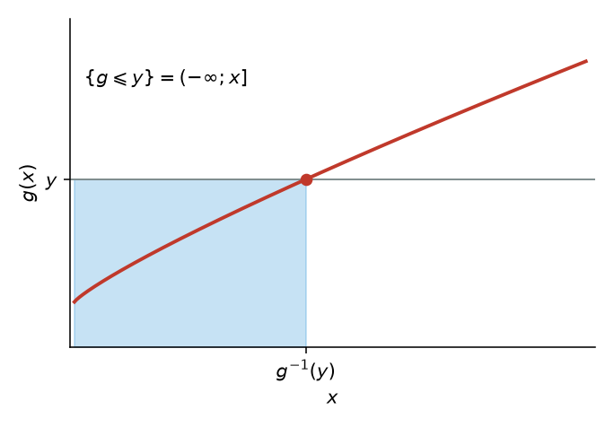
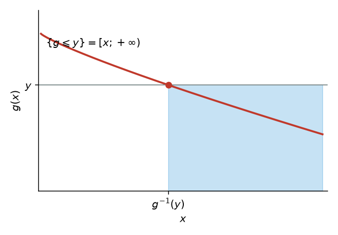
На доску
Диффеоморфизмом называется такая биективная функция \(g(x)\), обратная \(g^{-1}(y)\) которой является непрерывно дифференцируемой.
На доску
Пусть \(X \sim f_X(x)\) является непрерывной случайной величиной и \(Y = g(X)\), где \(g\) является диффеоморфизмом и строго монотонной функцией. Тогда плотность вероятности \(Y\) имеет вид
где \(\mathcal{Y}\) — носитель распределения \(Y\).
Модуль производной — якобиан в одномерии: сжимаете ось \(x\) в \(y\), плотность пересчитывается.
Немонотонные преобразования¶
На доску
Пусть \(X \sim f_X(x)\) и \(Y = g(X)\). Пусть существует такое разбиение \(A_0, A_1, \dots, A_k\) для носителя \(\mathcal{X}\) случайной величины \(X\), что \(f_X(x)\) непрерывна на всех \(A_i\) и \(P(X \in A_0) = 0\). Пусть существуют функции \(g_1(x), \dots, g_k(x)\), определенные на \(A_1, \dots, A_k\) соответственно и удовлетворяющие условиям:
- \(g(x) = g_i(x)\), \(x \in A_i\);
- множество \(\mathcal{Y} = \{ y : y = g_i(x) \text{ для } x \in A_i \}\) одинаково для каждого \(i = 1, \dots, k\);
- \(g_i(x)\), как отображение из \(A_i\) в \(\mathcal{Y}\), является диффеоморфизмом.
Тогда плотность вероятности \(Y\) имеет вид:
На графике куски \(g_{i-1}\), \(g_i\), \(g_{i+1}\) живут на \(A_{i-1}\), \(A_i\), \(A_{i+1}\).
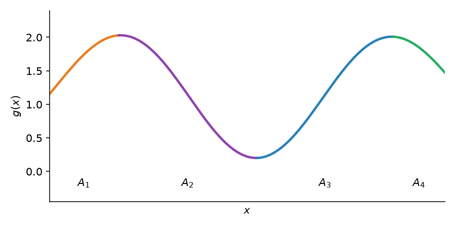
Задача 7.4. \(Y=3X\)¶
Задана плотность распределения \(f(x)\) случайной величины \(X\), возможные значения которой заключены в интервале \((a, b)\). Найти плотность распределения случайной величины \(Y = 3X\).
Решение¶
Открыть
Так как функция \(y = 3x\) дифференцируема и строго возрастает, то применима формула
где \(\psi(y)\) — функция, обратная функции \(y = 3x\).
\(\psi(y) = y/3\), \(f\bigl[\psi(y)\bigr] = f(y/3)\), \(|\psi'(y)| = 1/3\).
Искомая плотность \(g(y) = (1/3)\, f(y/3)\). Так как \(x\) изменяется в интервале \((a, b)\) и \(y = 3x\), то \(3a < y < 3b\).
Задача 7.5. Квадрат нормальной¶
Рассмотрим случайную величину \(X \sim n(0, 1)\):
и квадратичное преобразование \(Y = X^2\).
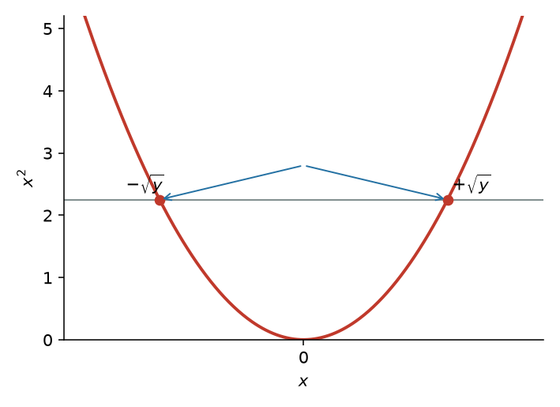
Решение¶
Открыть
Плотность \(Y\):
Это распределение хи-квадрат!
Многомерные преобразования¶
Теория¶
Несмотря на то, что двумерные распределения ещё не проходили, бояться их не нужно. Это отображения из пар \((x, y)\) в вероятности; функции распределения и плотности определяются похожим образом. С преобразованиями: просто расширяем на многомерный случай.
Теория вероятностей #24: многомерные преобразования / сумма, разность и отношение случайных величин.
Одномерная случайная величина:
- случайная величина \(X \sim f_X\);
- диффеоморфизм: \(Y = g(X)\);
- плотность вероятности для \(Y\):
На доску
Двумерная случайная величина:
- случайная величина \((X, Y) \sim f_{X,Y}\);
- диффеоморфизм: \(U = g_1(X, Y)\), \(V = g_2(X, Y)\);
- плотность вероятности для \((U, V)\):
Так как \(g_1(x, y)\) и \(g_2(x, y)\) являются диффеоморфизмом, можно выразить обратные отображения: \(X = h_1(U, V)\) и \(Y = h_2(U, V)\).
В многомерном случае производная обратной функции заменяется на якобиан:
На доску
где \(J \ne 0\) и \((u, v) \in \Omega_{U,V}\).
Небиективное преобразование.
Необходимо построить разбиение \(A_0, A_1, \dots, A_k \subset \Omega_{X,Y}\):
- \(P\bigl((X, Y) \in A_0\bigr) = 0\);
- для \(A_i\) дан диффеоморфизм \((U, V) = \bigl(g_{1i}(X, Y), g_{2i}(X, Y)\bigr)\), отображающий \(A_i\) в \(\Omega_{U,V}\);
- обратное преобразование: \((X, Y) = \bigl(h_{1i}(U, V), h_{2i}(U, V)\bigr)\).
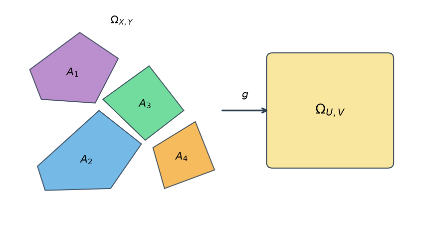
Совместное распределение для \((U, V)\):
На доску
где якобиан имеет вид
Задача 7.6. Формула суммы¶
Выведите формулу суммы двумерной СВ. Для начала поймём, что сумма является преобразованием двумерной СВ в одномерную СВ. К сожалению, нам это не совсем подходит, т.к. преобразование не биективно, поэтому, посчитаем формулу для \((x, y) \to (x + y, y)\)
Обратное: \(\psi = (u - v,\ v)\), \(x = u - v\), \(y = v\).
Fun facts:
- Если \(X \sim f_X\), \(Y \sim f_Y\), \(X\) и \(Y\) независимы \(\implies\) \((X, Y) \sim f_X f_Y = f_{XY}\).
- \(\int f_{X,Y}\, dy = f_X\) (маргинал).
Отсюда
Решение¶
Открыть
После замены \((U,V)=(X+Y,Y)\) маргинал \(U\) — интеграл совместной по \(v\). При независимости \(f_{X,Y}(u-v,v)=f_X(u-v)f_Y(v)\), откуда свёртка выше. Поправка: интеграл берётся только по совместной области определения \(v\) и \(u-v\).
Произведение \(Z=XY\) тем же жестом через \(F_Z\), либо сразу якобианом \((Z,X)=(XY,X)\): \(x=x\), \(y=z/x\), \(|J|=1/|x|\),
Задача 7.7. Сумма двух нормальных¶
Независимые нормально распределенные случайные величины \(X\) и \(Y\) заданы плотностями распределений:
Доказать, что композиция этих законов, т. е. плотность распределения случайной величины \(Z = X + Y\), также есть нормальный закон.
Решение¶
Открыть
Используем формулу \(g(z) = \int_{-\infty}^{\infty} f_1(x) f_2(z - x)\, dx\). Тогда
Выполнив элементарные выкладки, получим
Дополнив показатель степени показательной функции, стоящей под знаком интеграла, до полного квадрата, вынесем \(e^{z^2/4}\) за знак интеграла:
Учитывая, что интеграл Пуассона, стоящий в правой части равенства, равен \(\sqrt{\pi}\), окончательно имеем
Это \(n(0,2)\): дисперсии сложились.
Дискретные распределения¶
Задача 7.8. Линейное \(2X+1\)¶
Дискретная случайная величина \(X\) задана законом распределения:
| \(X\) | 3 | 6 | 10 |
|---|---|---|---|
| \(p\) | 0,2 | 0,1 | 0,7 |
Найти закон распределения случайной величины \(Y = 2X + 1\).
Решение¶
Открыть
\(y=2x+1\) взаимно однозначно, вероятности едут вместе со значениями: \(7\), \(13\), \(21\) с теми же \(0{,}2\), \(0{,}1\), \(0{,}7\).
| \(Y\) | 7 | 13 | 21 |
|---|---|---|---|
| \(p\) | 0,2 | 0,1 | 0,7 |
Задача 7.9. Квадрат дискретной¶
Дискретная случайная величина \(X\) задана законом распределения:
| \(X\) | −1 | −2 | 1 | 2 |
|---|---|---|---|---|
| \(p\) | 0,3 | 0,1 | 0,2 | 0,4 |
Найти закон распределения случайной величины \(Y = X^2\).
Решение¶
Открыть
Возможные значения \(Y\): \(1\), \(4\), \(1\), \(4\). Различным значениям \(X\) соответствуют одинаковые значения \(Y\): \(X^2\) не монотонна.
\(P(Y=1)=P(X=-1)+P(X=1)=0{,}3+0{,}2=0{,}5\), \(P(Y=4)=P(X=-2)+P(X=2)=0{,}1+0{,}4=0{,}5\).
| \(Y\) | 1 | 4 |
|---|---|---|
| \(p\) | 0,5 | 0,5 |
Задача 7.10. Сумма двух дискретных¶
Дискретные независимые случайные величины \(X\) и \(Y\) заданы распределениями:
| \(X\) | 1 | 3 |
|---|---|---|
| \(P\) | 0,3 | 0,7 |
| \(Y\) | 2 | 4 |
|---|---|---|
| \(P\) | 0,6 | 0,4 |
Найти распределение случайной величины \(Z = X + Y\).
Решение¶
Открыть
Возможные суммы: \(1+2=3\), \(1+4=5\), \(3+2=5\), \(3+4=7\). Независимость — произведение,
| \(Z\) | 3 | 5 | 7 |
|---|---|---|---|
| \(P\) | 0,18 | 0,54 | 0,28 |
Контроль: \(0{,}18+0{,}54+0{,}28=1\).
Самостоятельная¶
9 минут. Независимые случайные величины \(X\) и \(Y\) заданы плотностями распределений:
Найти композицию этих законов, т. е. плотность распределения случайной величины \(Z = X + Y\).
Решение¶
Открыть
Носители неотрицательны, свёртка по \([0,z]\):
при \(z>0\), и \(g(z)=0\) при \(z<0\).
6 минут. Случайная величина \(X\) равномерно распределена в интервале \((-\pi/2, \pi/2)\). Найти плотность распределения \(g(y)\) случайной величины \(Y = \sin X\).
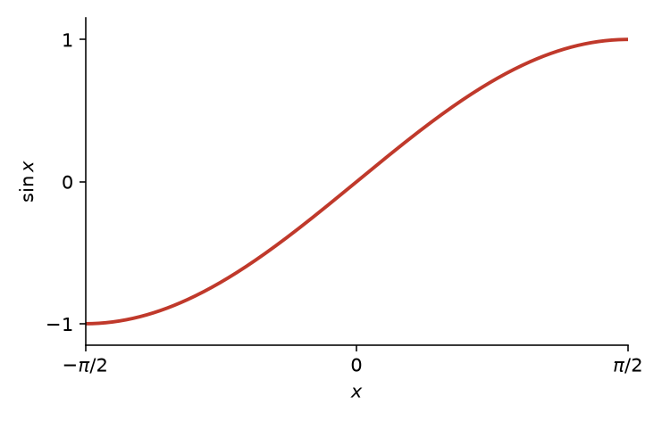
Решение¶
Открыть
Найдем плотность распределения \(f(x)\) случайной величины \(X\). Величина \(X\) распределена равномерно в интервале \((-\pi/2, \pi/2)\), поэтому в этом интервале
вне рассматриваемого интервала \(f(x) = 0\).
Функция \(y = \sin x\) в интервале \((-\pi/2, \pi/2)\) монотонна, следовательно, в этом интервале она имеет обратную функцию \(x = \psi(y) = \arcsin y\). Найдем производную \(\psi'(y)\):
Найдем искомую плотность распределения по формуле
Учитывая, что \(f(x) = 1/\pi\) (следовательно, \(f\bigl[\psi(y)\bigr] = 1/\pi\)) и \(|\psi'(y)| = 1/\sqrt{1-y^2}\), получим
Так как \(y = \sin x\), причем \(-\pi/2 < x < \pi/2\), то \(-1 < y < 1\). Таким образом, в интервале \((-1, 1)\) имеем \(g(y) = 1/(\pi\sqrt{1-y^2})\); вне этого интервала \(g(y) = 0\).
Контроль:
Домашнее задание
HW7_y2023.pdf